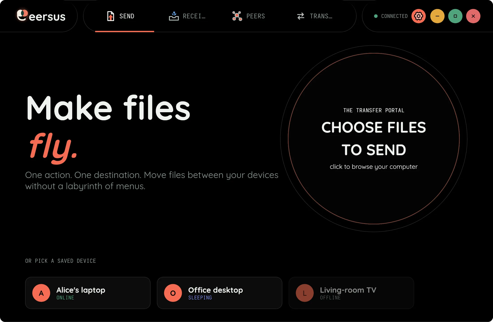

DOWNLOAD / DEVELOPER PREVIEW
Get Peersus.
Download the current test build, with the size of every file before you fetch it, or build Peersus yourself from its source on GitHub.
The current test build.
Built by the project’s CI from the development branch and signed with the maintainer’s key; Peersus checks that signature before it updates itself. Not a release: expect changes.
Looking for the prerelease staged with this site…
Download Peersus only from this page or the project’s GitHub releases, never a copy under its name elsewhere. Linux and Android have been runtime-tested during development; this guide is not a promise that every configuration works. Windows and macOS are not runtime-verified.
Before you build or install
- You can lose files. This is unfinished software.
- No outside expert has checked it. Do not use it for anything secret.
- If it breaks, nobody is liable. You use it at your own risk.
Linux desktop

Use rustup with the pinned toolchain in rust-toolchain.toml (the workspace MSRV is a separate compatibility floor), a C/C++ toolchain, CMake, Ninja, pkg-config, and the Linux graphics and desktop-portal development prerequisites for Freya/Skia. Exact package names depend on your distribution. A working desktop secret service/keyring is required for persistent identity.
From the root of your trusted checkout:
./dev.sh desktop # development build: target/ui/<target>/debug/
./build.sh desktop # optimised build: target/ui/<target>/release/Run peersus-ui from the build folder: it starts the rest of Peersus when needed. Peersus starts with no extension installed; extensions come from the store, each one when you choose it. Skia, the drawing library, is built from source, which takes a while the first time and needs network access for its build dependencies; the application’s transfer privacy does not make builds offline. On a distribution without the development headers, --container NAME builds inside an existing Distrobox.
Android developer build
The project targets Android 12/API 31 or newer, with SDK 36 and Java 17. Install the Android SDK/NDK, Gradle-wrapper prerequisites, cargo-ndk, and Rust targets for the ABI you build. Set ANDROID_HOME to your SDK and both ANDROID_NDK_HOME and ANDROID_NDK to the installed NDK directory (27.2.12479018 in the release workflow). cargo-ndk and the Skia build require these separately; do not copy someone else’s absolute paths.
./dev.sh android # debuggable APK:
# target/distribution/android/community/debug/app-community-debug.apk
./build.sh android # unsigned release APKs and bundles./dev.sh android builds the native libraries for both Android ABIs and packages a debuggable APK signed with Gradle’s local debug key; it is for your own devices, not for publishing. Install it with adb install -r. ./build.sh android prepares the unsigned release flavours. Neither command installs anything by itself.
First transfer
- Open Peersus on both devices. Allow only the permissions needed for the feature you use.
- Use the pairing flow to connect the intended devices. Verify the other device before accepting.
- Select a small, non-sensitive test file and the destination device.
- Accept the incoming offer on the receiver. Verify the saved file before sending important data.
What is not ready to promise
- No stable release yet: the test build changes without notice, and only Linux and Android have been run on real devices. Windows and macOS have not.
- Clipboard and cloud-upload plugins are under development and need separate platform and privacy validation.
- No independent security audit has been completed. Network conditions and operating-system restrictions still matter.
Review the privacy and security notes before using sensitive files.
Before you ask
Is Peersus free?
Yes. The application is Apache-2.0 free software. Support is voluntary and unlocks nothing. Third-party network or payment services may have their own costs and terms.
Can I download it right now?
Yes, the test build above: built by the project’s CI from the public source and signed with the maintainer’s key, which Peersus checks before it updates itself. It is not a release and there are no app-store listings yet; formats and settings can still change.
Can two paired devices reach each other from different networks?
Often, yes: Peersus tries a direct path first and can fall back to an optional encrypted relay, which sees that a connection happened but not what is in it. Whether a path exists depends on the networks in between; nothing here promises it always will.